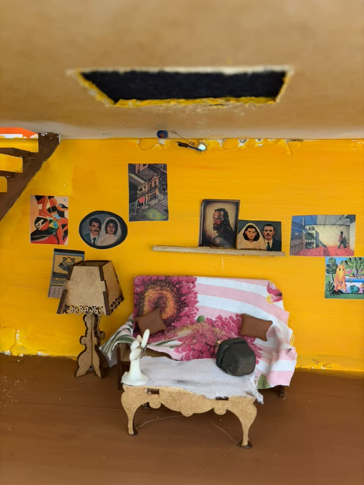
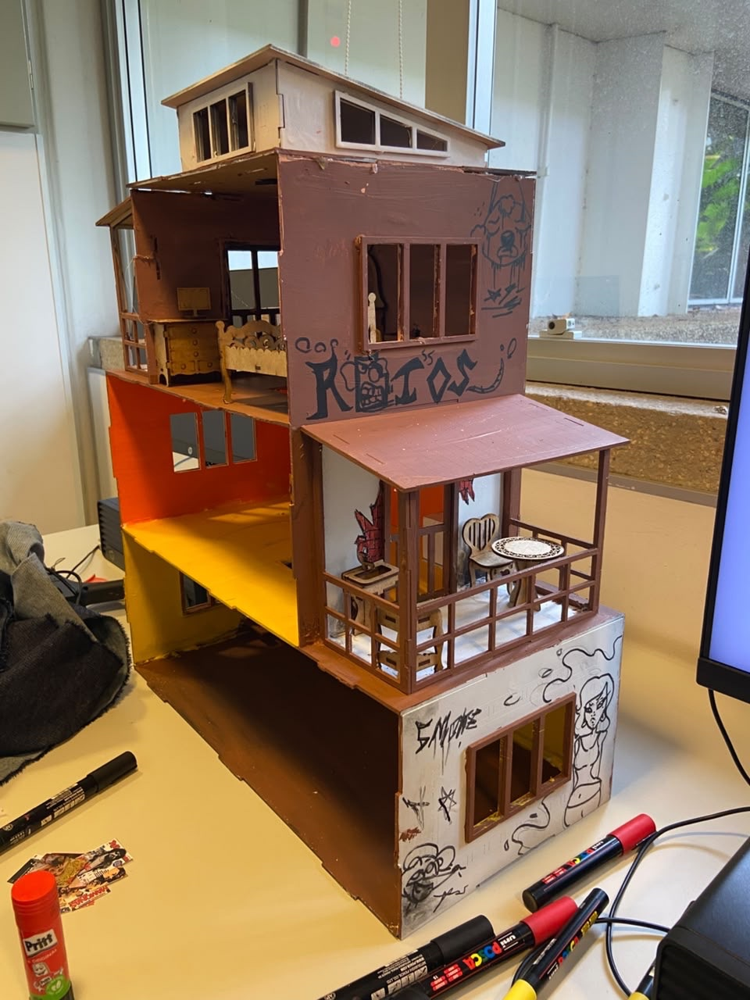
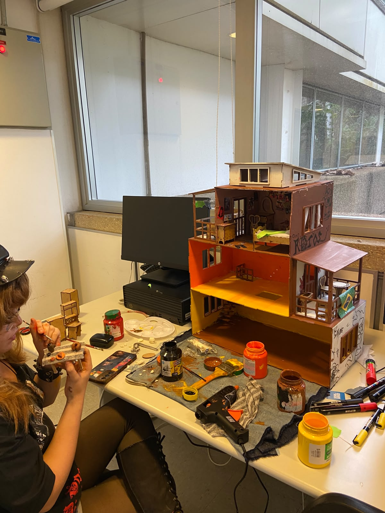
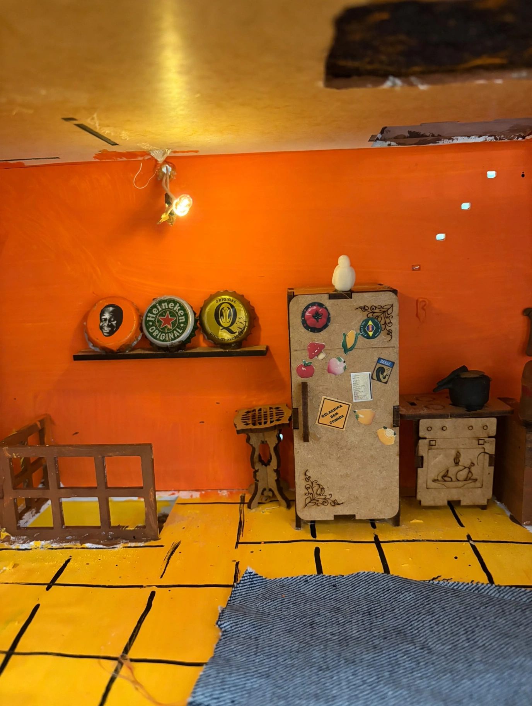
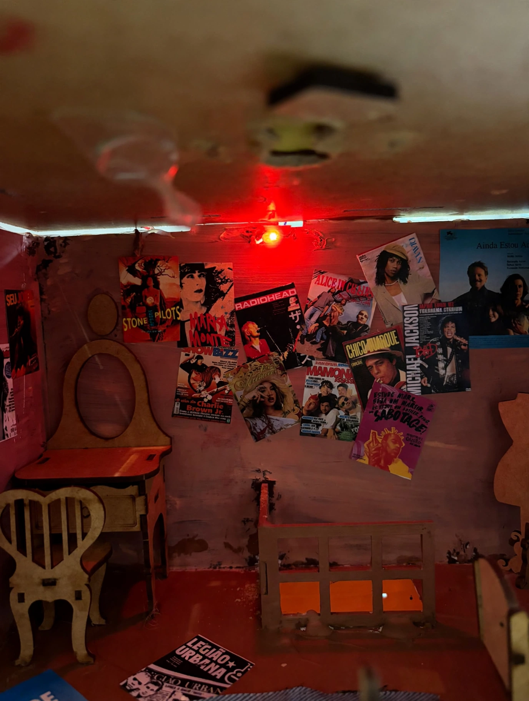
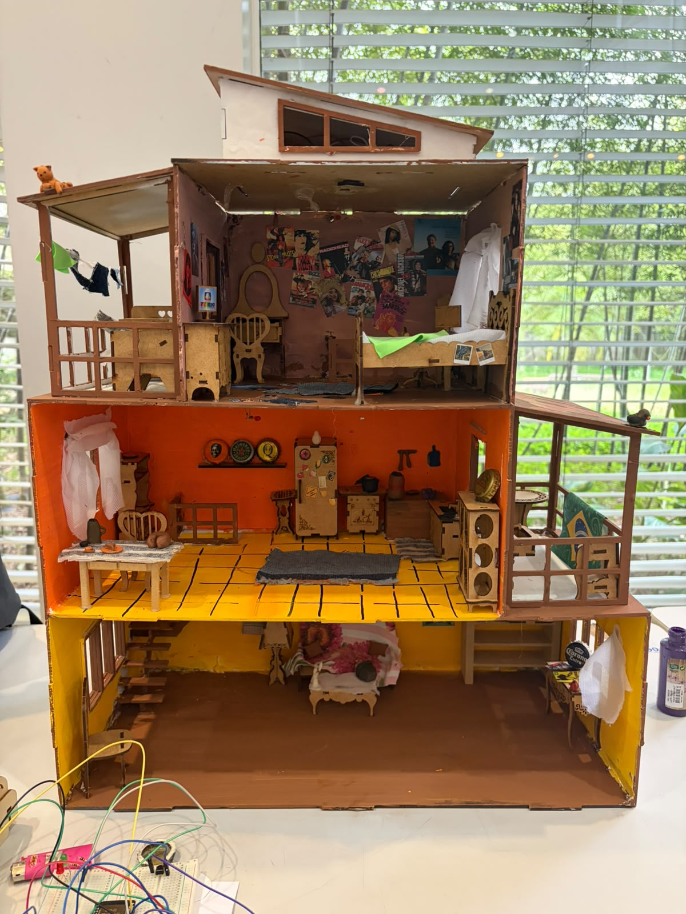

Sala
Espaço para demonstrar a iluminação e a interação com os dispositivos de controle.

[ADICIONAR FOTO DA SALA DA MAQUETE]
Uma maquete que reúne organização dos ambientes, criatividade e soluções tecnológicas.
O design é uma parte importante de uma casa inteligente, pois define a organização dos ambientes e o espaço disponível para instalar os dispositivos. A estrutura precisa considerar tanto a aparência da maquete quanto o funcionamento dos componentes eletrônicos.
A distribuição dos cômodos ajuda a visualizar como os recursos de automação podem ser utilizados em diferentes áreas da casa, como sala, cozinha, quarto e espaços de circulação.


[ADICIONAR FOTO REAL DA CASA INTELIGENTE]
Espaço para demonstrar a iluminação e a interação com os dispositivos de controle.

[ADICIONAR FOTO DA SALA DA MAQUETE]
Ambiente que pode demonstrar o controle independente da iluminação e a distribuição dos componentes.

[ADICIONAR FOTO DA COZINHA]
Espaço para apresentar soluções de iluminação e conforto residencial.

[ADICIONAR FOTO DO QUARTO]
Regiões destinadas à movimentação entre os ambientes, incluindo a escada e o elevador do projeto.

[ADICIONAR FOTO DA ESCADA E DO ELEVADOR]
A estrutura física precisa permitir a instalação dos fios, das placas e dos mecanismos necessários para o funcionamento da maquete. Também é importante organizar os componentes para facilitar a manutenção, os testes e a apresentação.
O posicionamento dos dispositivos influencia a demonstração do projeto. Por exemplo, uma câmera precisa ter uma posição adequada para captar a entrada, enquanto as luzes devem estar distribuídas conforme os ambientes que serão controlados.
[ADICIONAR LINK DO VÍDEO DA MONTAGEM OU DA MAQUETE PRONTA]
Para a realização do projeto, foram utilizados materiais recicláveis, biscuit, tecidos, pincéis, tintas, sprays e outros materiais artísticos. A casa foi inspirada em uma residência brasileira, com intervenções externas de grafites, pichações e paredes descascadas. Já a decoração interna traz elementos da cultura brasileira, como filtro de barro e bolo de fubá. O quarto apresenta uma estética mais despojada, com revistas da Capricho e itens vintage, enquanto a sala mantém a mesma identidade brasileira. Toda a estrutura também foi adaptada para a passagem do elevador, preservando a harmonia visual e a unidade da decoração.
Esta seção poderá apresentar o desenho da estrutura, as medidas utilizadas e as decisões tomadas durante a construção da maquete.
Para a concepção e elaboração da casa, uma das ]primeiras decisões tomadas foi adotar uma estética predominantemente brasileira, incorporando elementos que remetessem à cultura nacional, à infância e a aspectos presentes no cotidiano e na realidade do Brasil.
A estrutura possui aproximadamente 45 centímetros de largura e 85 centímetros de altura. Como a casa foi inicialmente entregue apenas com sua estrutura, sem qualquer mobiliário ou decoração interna, foram adquiridos materiais e objetos para compor os ambientes, evitando que o espaço permanecesse vazio e tornando-o mais completo e visualmente agradável.
Além disso, a casa passou por modificações com o objetivo de incorporar recursos de automação, como câmeras e iluminação inteligente. Alguns elementos que inicialmente seriam instalados na parte interna foram posicionados na área externa por questões de preferência estética. Entre eles, destacam-se o elevador e a escada rolante, ambos funcionais, que também contribuem para a composição e a personalidade do projeto.